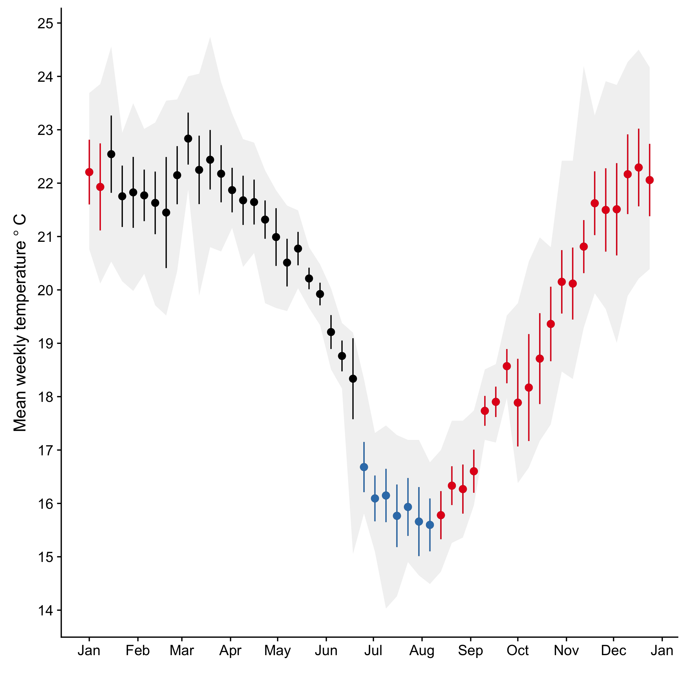
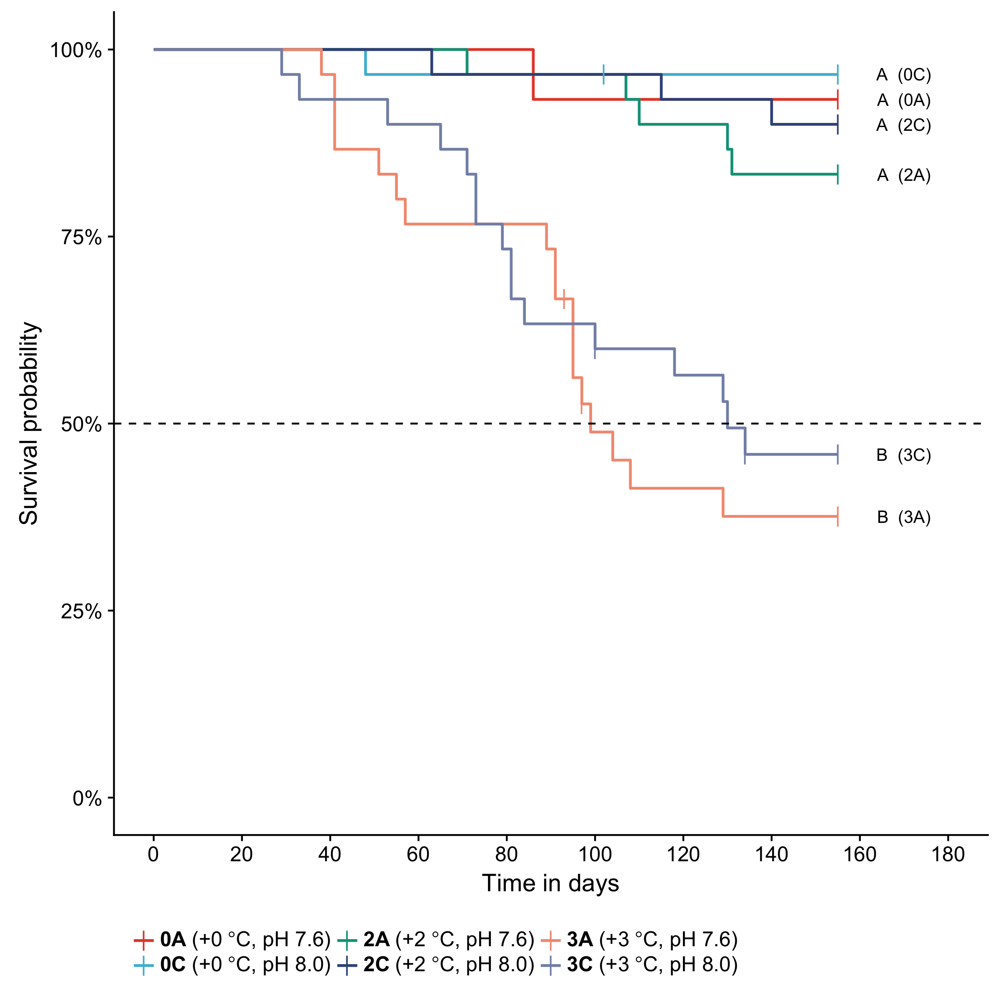
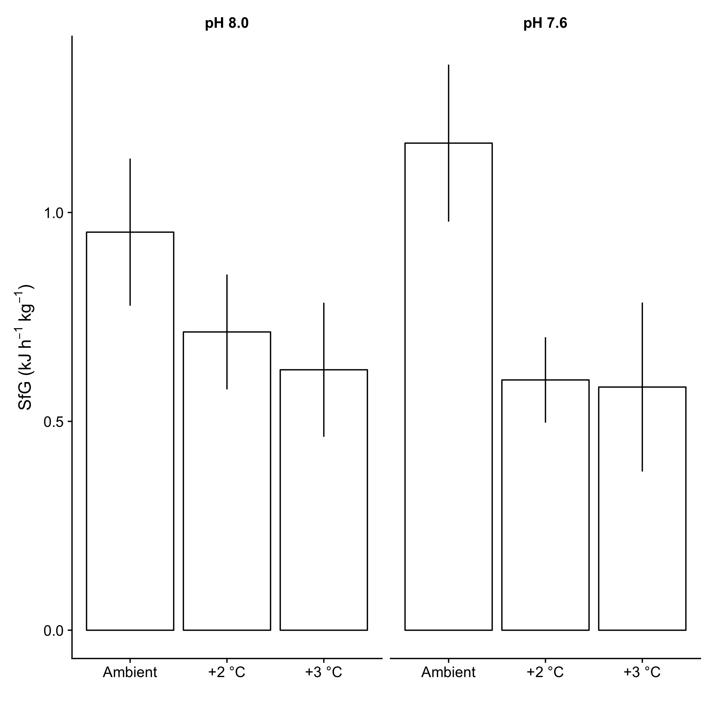

Chapter 3 Quantifying the response of the sea urchin Heliocidaris erythrogramma under future warming and acidification
Abstract
3.1 Introduction
Many of the key challenges in predicting the ecological impacts of climate change stem from the fact that most ecosystems are confronted with multiple chemical, physical and biological stressors, which often interact (refs). For the world’s oceans, both \(CO_2\)-induced warming and ocean acidification exert their effects simultaneously, due to approximately 25% of anthropogenic \(CO_2\) emissions being directly absorbed by seawater (refs). Ocean warming (OA) increases the body temperature of marine ectotherms, affecting almost all the biological rates of physiological processes (Brown et al. 2014, Hochachka and Somero 2002). Increased ocean \(CO_2\) causes ocean acidification (OA) and decreases seawater pH, reducing carbonate saturation states in sea water. Common physiological processes that depend on extracting minerals from sea water, such as calcification and skeletogenesis, are thus affected (Wood, Spicer, and Widdicombe 2008). In addition, the metabolic demands in maintaining acid-base balance to support these very processes are also elevated (Melzner et al. 2009; Pörtner, Bock, and Reipschlager 2000, Collard et al. 2013; chk).
Both OW and OA have been known to drive population shifts worldwide (refs), but predicting how they interact and affect marine biota has proven to be a complex undertaking (reviews). Many subtle changes have been documented in multistressor experiments that investigate both stressors simultaneously, reflecting interactive effects which would not necessarily be predicted from investigating the stressors in isolation. For example, such as mitigating decreased growth (Byrne et al 2011),
and a framework that can appropriately estimate overall responses to multiple stressors remain lacking.
Given that
As maintaining energy surplus is the key for long-term survival, bioenergetics-based models can be used to examine how environmental stressors affect the fitness and survival of marine organisms by changing their energy budget.
3.2 Methods
3.2.1 Collection
Heliocidaris erythrogramma (44.15 \(\pm\) 3.25 mm test diameter) were collected from the subtidal (2–3m depth) at low tide, at Milk Beach (-33.856478, 151.266958) and Bottle and Glass Point (-33.847960, 151.270122) in June, 2014. Sea surface temperature (SST) at the time was approximately \(15.3^{\circ}C\). The urchins were transported to the Sydney Institute of Marine Science (SIMS) in Chowder Bay and were held in aquaria (\(80\ L\)) supplied with ambient flow-through, filtered seawater (FSW, \(70\ \mu m\), \(1.5\ L\ min^{-1}\)). After 1 week, they were randomly allocated 6 treatments, based on three temperature profiles (ambient: \(+0^{\circ}C\), elevated: \(+2^{\circ}C\) and \(+3^{\circ}C\), adjusted weekly with regard to the mean SST profile as detailed below) and two constant total pH (\(pH_T\), on the total hydrogen scale) levels (ambient \(8.0\), low: \(7.6\)). For each treatment we used three replicate tanks with 10 urchins per tank.
3.2.2 Experimental setup
We performed all acclimation experiments in a constant-temperature room where the lighting was adjusted weekly to reflect the diurnal sunrise/sunset cycle. Each header tank was supplied with FSW (\(20\ \mu m\)) via a thermocouple-solenoid feedback system that automatically mixed warm (\(25^{\circ}C\)) and cold (\(14.5^{\circ}C\)) filtered FSW (\(20\ \mu m\)) in a \(2\ L\) mixing chamber to supply temperature-controlled water consistently. Each header tank was also equipped with a heater (75 W, EHEIM GmbH & Co KG, Germany) attached to a temperature controller (model 7028/3, TUNZE Aqraientechnik GmbH, Germany) as a second level of temperature control.
Sea water pH was maintained using a mixed \(CO_2\) system, where a thermally-compensated, low-flow controller valve (Parker Hannifin, OH, USA) and a proportional–integral–derivative controller, updated every \(10\ s\), were used to precisely inject food-grade \(CO_2\) (BOC, Australia) into ambient air that had been scrubbed of \(CO_2\). The \(CO_2\)-mix was bubbled vigorously and continuously into header tanks using \(20 cm\) ceramic diffusers.
3.2.3 Gradual adjustment to treatment conditions and acclimation
To minimise physiological shock to altered conditions, adjustments to the levels of warming and acidification of the tanks were performed gradually. Temperature was increased at a rate of \(1^{\circ}C\) every 6 days until target elevated temperatures were achieved. Sea water pH was decreased at a rate of \(-0.1\ pH_T\) units every week. Both temperature and pH manipulations were performed on a staggered schedule such that all treatments achieved target conditions in the same week (Fig. 3.1 A). Further, all adjustments were made in header tanks such that treatments slowly stabilised to their new conditions within 1 to 2 days. The adjustment process took 7 weeks, and no mortality was recorded during this period. Once the treatment conditions were established, treatment temperatures were at \(15.6 \pm 0.4^{\circ}C\), \(17.6 \pm 0.4^{\circ}C\) and \(18.6 \pm 0.3^{\circ}C\) (s.d.) for the ambient, \(+2^{\circ}C\) and \(+3^{\circ}C\) treatments respectively.
Once treatment conditions were established, all treatments underwent an acclimation protocol where temperature levels were regulated weekly based on an offset to previously-recorded mean weekly temperature over the same period in Sydney Harbour (Fig. 3.1 A & B). Thus, treatment temperatures were adjusted to mimic the seasonal change expected over winter to early summer, based on reference data collected from in situ loggers deployed in Chowder Bay from 2009–2014 (Fig. 3.2). Because temperature has an effect on \(CO_2\) solubility and temperatures were changing every week, the system maintained constant pH (not \(CO_2\) ppm) within each treatment.
knitr::include_graphics("figs/ch_multistressor/acclim.png")![Temperature and pH in treatment tanks, measured daily. Only one replicate tank for every treatment was selected at random for daily measurements. Shaded regions are the pre-acclimation adjustment periods for temperature (pink) and pH (blue), respectively. (A) Coloured lines represent the planned temperature profiles (+0, +2, +3), which change every week, while coloured dots represent the actual temperatures measured. The black dots are the reference temperatures collected from *in situ* loggers deployed in Chowder Bay from 2009 to 2014, averaged by day. (B) Black lines represent the reference constant pH levels, with the initial adjustments (8.0, 7.6). Shapes represent the pH treatment group (triangle: 8.0; circle: 7.6), colours represent the temperature treatment group (+0, +2, +3).](figs/ch_multistressor/acclim.png)
Figure 3.1: Temperature and pH in treatment tanks, measured daily. Only one replicate tank for every treatment was selected at random for daily measurements. Shaded regions are the pre-acclimation adjustment periods for temperature (pink) and pH (blue), respectively. (A) Coloured lines represent the planned temperature profiles (+0, +2, +3), which change every week, while coloured dots represent the actual temperatures measured. The black dots are the reference temperatures collected from in situ loggers deployed in Chowder Bay from 2009 to 2014, averaged by day. (B) Black lines represent the reference constant pH levels, with the initial adjustments (8.0, 7.6). Shapes represent the pH treatment group (triangle: 8.0; circle: 7.6), colours represent the temperature treatment group (+0, +2, +3).
knitr::include_graphics("figs/ch_multistressor/harbour.png")
Figure 3.2: Mean weekly-averaged temperature (\(\pm\) s.d.) for Chowder Bay, NSW, Australia, from 2009 to 2014. Data were obtained from loggers deployed in situ at 3 m depth at the level of the sea urchin habitat. Colours represent the adjustment (blue) and acclimation (red) periods of the experimental treatments, respectively. The shaded region is the max/min of the temperatures recorded. These data were used to design the temperature profile of the elevated temperature treatments.
3.2.4 Monitoring
Temperature was recorded daily in all tanks. Sea water pH was measured spectrophotometrically with a custom-built sampling system connected to an Ocean Optics USB4000+ fibre optic spectrometer, using m-Cresol dye indicator (Acros Argonics, catalog number 110585000, Lot A0321770) and calculated according to Liu et al. (2011). The measurements were calibrated to certified reference material (CRM) for \(CO_2\) in seawater (Batch 139) following SOP 6b in Dickson et al. (2007). The pH of the tanks were measured every 2 to 3 days. In addition, the sampling system automatically measured pH in one ambient and one low pH treatment every two hours to characterise pH during the acclimation period (Supplementary Material ##).
To estimate total alkalinity (\(A_T\)) of the sea water, water samples (330 mL) were taken randomly from experimental tanks every 2 to 3 weeks (total \(n = 64\) samples). \(A_T\) was determined by potentiometric titration (907 Titrando, Metrohm), calibrated using sea water CRMs (Batch 139; Dickson et al., 2007). The carbonate chemistry parameters \(pCO_2\), calcite and aragonite staturation states (\(\Omega Ca\) and \(\Omega Ar\)) were calculated by running the data in the “seacarb” package in R (Lavigne et al., 2011) using the dissociation constants of Mehrbach et al. (1973) refitted by Dickson & Millero (1987).
3.2.5 Maintenance
Specimens were fed on a diet mixture of fresh Ecklonia radiata and Sargassum spp. suspended in kelp-based agar (MSC CO, Kyeongnam, Korea). To prepare the food, E. radiata, and Sargassum spp. were washed in fresh water, dried at \(50^{\circ}C\) over 48 hours, and then ground into fine powder for storage. The food was mixed with agar powder to a ratio of 1:4 by weight, and then mixed with FSW (20 \(\mu m\)) to a ratio of 1:10 by weight at \(\sim 80 ^{\circ}C\). The agar was left to cool and solidify for 45 minutes, before it was cut into 1 to 2 \(cm^2\) cubes and fed to the specimens. We fed the specimens twice a week by placing 3 to 4 cubes on top of each individual urchin. This feeding technique ensured that each animal received the same amount of food in excess during the entire experimental period.
All treatment tanks were siphoned every two days and wiped weekly to remove faecal matter and minimise algal growth. \(CO_2\) diffusers were scrubbed and replaced every 3 to 5 days. Header tanks were cleaned of algal growth once a month.
3.2.6 Survival
Survival was recorded by measuring the survival time of individual specimens for 155 days (Aug–Dec 2014). Specimens were observed daily for mortality, and dead urchins were removed immediately.
3.2.7 Metabolic rate
Routine weight-specific metabolic rate, \(MO_2\) was estimated by intermittent-flow respirometry at two time-points (at 4 and 12 weeks of acclimation), from a random subsample of specimens (\(n = 10\ treatment^{-1}\)). The specimens were not fed for 5 days prior to measurements and transferred individually into \(1\ L\) respirometry chambers. Each respirometry chamber was kept in an individual water bath and contained an oxygen sensor spot (SP-PSt3-NAU, PreSens GmbH, Germany) for the detection of dissolved oxygen concentration using an external multi-channel sensor (OXY-10-mini, PreSens Gmbh, Germany). A magnetic stirrer ensured even mixing of water. The specimens were allowed to adjust to the chambers under flow-through conditions for 30 minutes prior to respirometry measures.
To measure oxygen uptake, chambers were sealed and dissolved oxygen (DO, \(mgO_2\ L^{-1}\)) was measured every 10 seconds until a 10% decrease in DO was recorded. The chamber was then flushed, and the measurement repeated. Background respiration was determined by recording FSW-only blanks (\(n\) = 8) to correct the recordings for background respiration and instrument drift. At the end of each measurement, sea water weight was calculated by deducting chamber, stir bar and urchin wet weights from the total weight of the chamber, and then converted to volume using sea water density estimated from current temperature, salinity and barometric air pressure (Fofonoff & Millard 1983).
Weight-specific \(MO_2\) (\(mgO_2\ L^{-1}\ h^{-1}\)) was calculated using the equation (Lighton 2008):
\[\begin{equation} MO_2 = \frac{\Delta O_2V}{W} \tag{3.1} \end{equation}\]where \(\Delta O_2\) is the linear regression of \(O_2\) concentration over time (\(mg\ L^{-1}\ h^{-1}\)), \(V\) is the volume of the sea water available (\(L\)) and \(W\) is the wet weight of the urchin (\(g\)).
3.2.8 Feeding rate and assimilation efficiency
Feeding trials were conducted after 13 weeks of acclimation. Specimens were transfered into individual tanks (\(4\ L\)) supplied with flowthrough FSW (\(6\ L\ h^{-1}\)) at the same treatment conditions. They were starved for 6 days in their new environments before feeding trials commenced, using the same agar-based food mixture used in routine feeding. Initial wet weight of the diet was determined and food was added to each tank in excess. Food-only autogenic controls were used to determine background changes in agar composition (\(n = 24\)).
After 48 hours, unconsumed food was carefully collected and oven dried at \(80^{\circ}C\) for 48 h, and then re-weighed. Faecal pellets were also siphoned at the same time for calculations of assimilation efficiency (see below). The specimens were removed from the tanks, blotted briefly with paper towel, and weighed. To convert the initial wet weight (\(W_{wet}\)) of the food to their dry-weight equivalents, the wet:dry ratio of the food was determined in a regression analysis of wet to dry weights (\(n = 60\), \(r^2 = 0.82\), \(p < 0.01\)), and determined as:
\[\begin{equation} W_{dry} = (0.1529 \times W_{wet}) - 0.036 \tag{3.2} \end{equation}\]Feeding rate, \(C\) (\(mg\ day^{-1}\ kg^{-1}\)), was calculated by subtracting the final dry weight (\(W_{T1}\)) from the initial dry weight (\(W_{T0}\)), with adjustments for background changes and specimen weight (\(W_{sp}\)) and adjusted by time (\(T\)):
\[\begin{equation} C = \frac{W_{T0} - W_{T1}}{W_{sp} \cdot T} \tag{3.3} \end{equation}\]Faecal samples were dried at \(60^{\circ}C\) for 48 hours and weighed. These samples were then ashed in a muffle furnace at \(500^{\circ}C\) for 2–3 hours and re-weighed to determine their ash-free dry weight (AFDW). Assimilaiton efficiency (%) was calculated using the Conover method (Conover, 1966):
\[\begin{equation} A = \left[ \frac{F - E}{(1 - E) \cdot F} \right] \times 100\% \tag{3.4} \end{equation}\]where \(F\) and \(E\) denote the AFDW:dry weight fraction measured in the diet and the faeces, respectively. All weights were determined using the same analytical balance accurate to 0.0001 g.
3.2.9 Ammonia excretion
To determine ammonia excretion rate 10 randomly selected specimens from each treatment that had not been used for respirometry were placed in the respirometry chambers (total \(n = 60\)). Initial water samples were carefully collected (\(50 mL\), \(0.22 \mu m\)). The chambers were sealed and left in the water baths for 3 hours before final water samples were collected. Background ammonia levels were determined by repeating the experiment without specimens (\(n = 3\ treatment^{-1}\)). The water samples were immediately frozen and stored in the dark until they were analysed spectrophotometrically (within 10 days) for total ammonia, following the methods of Parsons et al. (1984). Spectrophotometric readings were obtained at 640 nm on a microplate reader (CLARIOstar Microplate Reader, BMG LABTECH, Offenburg, Germany) and calibrated using daily blanks and a standard ammonium solution (Parsons et al., 1984). Ammonia excretion rate, \(U\) (\(\mu g\ kg^{-1}\ h^{-1}\)) was calculated according to the equation:
\[\begin{equation} U = \frac{N_c}{W \cdot T} \tag{3.5} \end{equation}\] where \(N_c\) is the concentration of ammonia (\(\mu g\ at\mbox{-}N\ L^{-1}\)), \(W\) is the weight of the specimen in \(kg\) and \(T\) is the time elapsed in hours. Ammonia concentration, \(N_c\) is determined following Parsons et al. (1984) and is summarised in the equation: \[\begin{equation} N_c = \frac{3 \cdot V}{\Delta E} \tag{3.6} \end{equation}\]where \(\Delta E\) is the difference between the standard and corrected spectrophotometric extinction values of the blue indophenol colour formed with ammonia and \(V\) is the volume of the chamber (\(L\)).
3.2.10 Scope for growth (SfG) parameters
To explore the influence of temperature and pH stressors on the growth potential of H. erythrogramma, we constructed a SfG model using data from respirometry, feeding trials and ammonia analyses.
Oxygen consumption was converted to energy equivalent values to calculate the energy lost in respiration per day, \(R_E\), using a conversion factor of \(14.14 J\ mg^{-1}\ O_2\) (Elliot and Davidson, 1975). A conversion factor of \(0.025 J\ g^{-1}\) ammonia (Crisp, 1984, Elliott and Davison, 1975) was used to estimate the energy equivalent of the energy lost due to ammonia excretion per day, \(U_E\).
The energy available from food, \(C_E\), was calculated using bomb-calorimetry using an automatic adiabatic bomb calorimeter (Gallenkamp, London). The calorimeter was calibrated for the heat of combustion of \(1 g\) of benzoic acid (26.493 \(kJ\ g^{−1}\)) at least three times to determine the approximate effective heat capacity of both the bomb chamber and the mass of the water within the calorimeter chamber, \(C_S\) (10.27 \(\pm\) 0.07 \(kJ\ ^{\circ}C\)).
The diet was dried in an oven at \(60^{\circ}C\) to remove moisture. Approximately 1 \(g\) of the diet was used each time to determine gross energy via combustion, and the experiment was repeated six times to obtain an average value (12.67 \(\pm\) 0.25 s.d. \(kJ\ g^{-1}\)) using the equation:
\[\begin{equation} C_E = \frac{\Delta T \times C_S}{W_S} \tag{3.7} \end{equation}\]where \(\Delta T\) \((^{\circ}C)\) is the change in temperature – detected using a Beckmann thermometer – between the initial and post-combustion of the sample, \(C_S\) is the effective heat capacity of the system (bomb chamber and water), and \(W_S\) is the weight of the diet sample (\(g\)).
To calculate scope for growth (\(SfG\)) we used the equation adapted from Winberg (1960):
\[\begin{equation} SfG = C_E \cdot A - (R_E + U_E) \tag{3.8} \end{equation}\]where \(C_E\) is the energy obtained from diets, \(A\) is the assimilation efficiency, \(R_E\) is the energy lost in respiration and \(U_E\) is the energy lost due to ammonia excretion. All energy-related units are in \(kJ\ g^{-1}\ day^{-1}\), while assimilation efficiency is a proportion.
We did not follow individual urchins, so the SfG data could not be analysed using the statistical approach (e.g.). Rather, we constructed the SfG model using treatment-averaged parameters as an indicative assessment of the impacts of our acclimation treatments on H. erythrogramma.
3.2.11 Statistical analyses
Analyses were performed in R (v 3.4.3). The survival time for each specimen was determined by the number of days from time zero when the acclimation period started to the end of the experiment. Survival data were analysed using Cox proportional hazards models (Cox, 1972), with right censoring, to determine whether temperature and pH affect survival time. Two model fits were run:
- Model 1:
(survival time) ~ temperature + pH + (temperature * pH)– where the interaction between temperature and pH was included; and - Model 2:
(survival time) ~ temperature + pH– main effects only.
The fitted Cox regression met the assumption of proportional hazards (Schoenfeld residual tests, Grambsch and Therneau 1994; \(p = 0.673\)). As no interactions were found between temperature and pH (Cox, \(p = 0.54\)), Model 1 was selected to test for main effects.
Post-hoc tests for the differences between treatments were determined using pairwise tests of significance corrected using the Benjamini-Hochberg (BH) false discovery rate method (Benjamini and Hochberg, 1995).
Metabolic rate data were analysed by constructing a linear model of metabolic rate as a function of temperature (\(+0^{\circ}C\), \(+2^{\circ}C\), \(+3^{\circ}C\)), pH (8.0, 7.6) and time (4 weeks, 12 weeks) as fixed factors. Feeding rate data were analysed by constructing a linear model of feeding rate as a function of temperature and pH as fixed factors. To test for effects, ANOVA was performed on the models, using type III sums of squares when interactions were present, or type II sums of squares when they were not (Langsrud 2003). For metabolic rate data, the ANOVA revealed no significant interactions between acclimation time, temperature and pH (\(F_{2,104}= 2.37\), \(p = 0.098\)). Thus, the three-way interaction term was removed from the model and the data re-analysed to only test for two-way interactions and single effects. All analyses were tested for normality and homogeneity of variances. Where treatment conditions were indicated to be significantly different, estimated marginal means (EMM, aka Least-Squares Means) were used to develop linear estimates for the post-hoc Tukey Highest Significant Difference (HSD) test to identify the significance between metal-tissue combinations. Significance was determined at p < 0.05 or lower for all statistical tests.
As different individual urchins were used to provide some of the parameters used to construct the model, SfG was calculated based using treatment-averaged parameters. Thus, we were unable to perform statistical tests of significant differences in SfG between treatment groups.
3.3 Results
3.3.1 Survival
There was a significant effect of treatment condition on survival response (logrank test, \(\chi_2\) = 61.23, \(d.f. =\) 3, \(p\) < 0.001) with no interaction between temperature and pH (Cox regression, \(z =\) 0.61, \(d.f. =\) 3, \(p =\) 0.54). As single stressors, decreased pH did not significantly affect survival (\(p\ = 0.296\), HR: 0.46, 95% CI: 0.10 – 1.99), neither did a \(+2 ^{\circ}C\) increase in temperature (\(p = 0.146\), HR: 2.68, 95% CI: 0.71 – 10.09). For these treatments, survival was \(>80\%\) after 155 days. At \(+3 ^{\circ}C\), survival decreased significantly (\(p < 0.001\), HR: 17.2, 95% CI: 5.27 – 56.25) regardless of pH level (pH 8.0: 40%; pH 7.6: 33%). These \(+3^{\circ}C\) treatments were the only ones that crossed the median surival threshold after 155 days (Figure 3.3). Post-hoc results (pairwise tests, BH-corrected) showed that urchins acclimated to \(+3 ^{\circ}C\) had significantly lower survival compared to all other treatments (\(p <\) 0.01 for all pairwise combinations), with no significant differences in other pairwise comparisons.
knitr::include_graphics("figs/ch_multistressor/surv_plot.png")
Figure 3.3: Survival in H. erythrogramma acclimated to combinations of increased temperature (ambient +0, +2, \(+3 ^\circ C\)) and decreased pH (ambient 8.0, decreased 7.6). Letters indicate treatments that differed (pairwise tests, with Benjamini-Hochberg (BH) false discovery rate corrections, p < 0.05).
3.3.2 Metabolic rate
The 2-way ANOVA showed that there were significant two-way interactions for acclimation time\(\times\)pH (\(F_{1,106}= 10.7\), \(p = .001\)), temperature\(\times\)pH (\(F_{5,106}= 3.36\), \(p = 0.039\)), and acclimation time\(\times\)temperature (\(F_{2,106}= 14.1\), \(p < 0.001\)). As single stressors, increased temperature (\(F_{2,106}= 8.69\), \(p < .001\)) and decreased pH (\(F_{1,106}= 22.8\), \(p < .001\)) significantly influenced metabolic rate.
Results of post-hoc analyses using Tukey’s HSD showed that although acclimation time alone did not significantly affect metabolic rate (\(F_{1,106}= 1.42\), \(p = 0.24\)), it clearly interacted with temperature or pH. At 4 weeks of acclimation, metabolic rate increased significantly as a result of elevated temperature (\(p = < 0.0001\)–\(0.08\)) or decreased pH (\(p < 0.001\)).
but at 12 weeks of acclimation, there were no significant pairwise differences between any treatment combinations.
knitr::include_graphics("figs/ch_multistressor/resp_plot.png")![Metabolic rate of *H. erythrogramma* acclimated for 12 weeks in six treatments of three temperatures ($+0, +2, +3 ^\circ C$) and two pH levels (8.0, 7.6). The top and bottom of the boxes represent the interquartile range (IQR) between the 25th and 75th percentile (Q1 and Q3, respectively). The horizontal line represents the median (Q2), the horizontal dotted line represents the mean, and the vertical lines (whiskers) represent the range of the data computed as follows: Q1 − 1.5IQR (bottom whisker); greater than Q3 + 1.5 IQR (top whisker).](figs/ch_multistressor/resp_plot.png)
Figure 3.4: Metabolic rate of H. erythrogramma acclimated for 12 weeks in six treatments of three temperatures (\(+0, +2, +3 ^\circ C\)) and two pH levels (8.0, 7.6). The top and bottom of the boxes represent the interquartile range (IQR) between the 25th and 75th percentile (Q1 and Q3, respectively). The horizontal line represents the median (Q2), the horizontal dotted line represents the mean, and the vertical lines (whiskers) represent the range of the data computed as follows: Q1 − 1.5IQR (bottom whisker); greater than Q3 + 1.5 IQR (top whisker).
3.3.3 Feeding rate and assimilation efficiency
The 2-way ANOVA showed that feeding rate was significantly influenced by elevated temperature (\(F_{2,90} = 10.88\), \(p < 0.001\)), but not pH (\(F_{2,90} = 0.02\), \(p = 0.9\)). There were also no statistically significant interactions between temperature and pH (\(F_{2,90} = 1.15\), \(p < 0.32\)). Acclimation to increased temperature of \(+2 ^\circ C\) and \(+3 ^\circ C\) significantly decreased feeding at pH 7.6 (p = 0.001 and p = 0.008, respectively), but not at pH 8.0. No other significant differences were detected.
load("output/ch_multistressor/feeding.RData")
hsd$contrasts## ph = pH 8.0:
## contrast estimate SE df t.ratio p.value
## amb - high 0.040364781 0.01835533 90 2.199 0.0768
## amb - med 0.030802658 0.01835533 90 1.678 0.2192
## high - med -0.009562123 0.01835533 90 -0.521 0.8613
##
## ph = pH 7.6:
## contrast estimate SE df t.ratio p.value
## amb - high 0.069437422 0.01835533 90 3.783 0.0008
## amb - med 0.068344931 0.01835533 90 3.723 0.0010
## high - med -0.001092490 0.01835533 90 -0.060 0.9980
##
## P value adjustment: tukey method for comparing a family of 3 estimatesgrps$contrasts## contrast ph estimate SE df t.ratio p.value
## 3 high - med pH 8.0 -0.009562123 0.01835533 90 -0.52094515 0.8613221099
## 2 amb - med pH 8.0 0.030802658 0.01835533 90 1.67813110 0.2191683756
## 1 amb - high pH 8.0 0.040364781 0.01835533 90 2.19907625 0.0767762508
## 6 high - med pH 7.6 -0.001092490 0.01835533 90 -0.05951895 0.9980488777
## 5 amb - med pH 7.6 0.068344931 0.01835533 90 3.72343694 0.0009894806
## 4 amb - high pH 7.6 0.069437422 0.01835533 90 3.78295589 0.0008077534
## .group
## 3 1
## 2 1
## 1 1
## 6 1
## 5 2
## 4 12knitr::include_graphics("figs/ch_multistressor/feed_plot.png")![Feeding rate of *H. erythrogramma* acclimated for 12 weeks to conditions of increased temperature ($+0, +2, +3 ^\circ C$) and decreased pH (8.0, 7.6). The top and bottom of the boxes represent the interquartile range (IQR) between the 25th and 75th percentile (Q1 and Q3, respectively). The horizontal line represents the median (Q2), the horizontal dotted line represents the mean, and the vertical lines (whiskers) represent the range of the data computed as follows: Q1 − 1.5IQR (bottom whisker); greater than Q3 + 1.5 IQR (top whisker).](figs/ch_multistressor/feed_plot.png)
Figure 3.5: Feeding rate of H. erythrogramma acclimated for 12 weeks to conditions of increased temperature (\(+0, +2, +3 ^\circ C\)) and decreased pH (8.0, 7.6). The top and bottom of the boxes represent the interquartile range (IQR) between the 25th and 75th percentile (Q1 and Q3, respectively). The horizontal line represents the median (Q2), the horizontal dotted line represents the mean, and the vertical lines (whiskers) represent the range of the data computed as follows: Q1 − 1.5IQR (bottom whisker); greater than Q3 + 1.5 IQR (top whisker).
3.3.4 Ammonia excretion rate
Urchins acclimated to elevated temperature treatments had significantly higher ammonia excretion rates (2-Way ANOVA, \(F_{1, 56} = 17.9\), \(p < 0.001\)). Decreased pH had no significant effect (\(F_{1, 56} = 0.92\), \(p < 0.34\)), and both temperature and pH did not significantly interact (\(F_{1, 56} = 0.67\), \(p = 0.42\)). Post-hoc using Tukey’s HSD (\(p = 0.05\)) showed that at ambient pH (8.0), acclimation to \(+2 ^\circ C\) increased ammonia excretion by 1.3\(\times\) (\(d.f. =\) 54, \(p =\) 0.016), but not at \(+3 ^\circ C\) (\(p =\) 0.099). At low pH (7.6), acclimation to \(+2 ^\circ C\) did not significantly affect ammonia excretion (\(p =\) 0.29), but at \(+3 ^\circ C\), excretion increased by 1.5\(\times\) (\(p =\) 0.016).
load("output/ch_multistressor/ammonia.RData")
hsd$contrasts## ph = 7.6:
## contrast estimate SE df t.ratio p.value
## 0 - 2 -14.34 9.442193 54 -1.519 0.2903
## 0 - 3 -35.80 9.442193 54 -3.791 0.0011
## 2 - 3 -21.46 9.442193 54 -2.273 0.0684
##
## ph = 8.0:
## contrast estimate SE df t.ratio p.value
## 0 - 2 -27.05 9.442193 54 -2.865 0.0161
## 0 - 3 -19.84 9.442193 54 -2.101 0.0991
## 2 - 3 7.21 9.442193 54 0.764 0.7268
##
## P value adjustment: tukey method for comparing a family of 3 estimatesgrps$contrasts## contrast ph estimate SE df t.ratio p.value .group
## 2 0 - 3 7.6 -35.80 9.442193 54 -3.7914920 0.00108953 1
## 3 2 - 3 7.6 -21.46 9.442193 54 -2.2727770 0.06837392 1
## 1 0 - 2 7.6 -14.34 9.442193 54 -1.5187149 0.29027985 1
## 4 0 - 2 8.0 -27.05 9.442193 54 -2.8648005 0.01609529 12
## 5 0 - 3 8.0 -19.84 9.442193 54 -2.1012067 0.09907615 1
## 6 2 - 3 8.0 7.21 9.442193 54 0.7635938 0.72675230 2knitr::include_graphics("figs/ch_multistressor/nh_plot.png")![Feeding rate of *H. erythrogramma* acclimated for 12 weeks in six treatments of three temperatures ($+0, +2, +3 ^\circ C$) and two pH levels (8.0, 7.6). The top and bottom of the boxes represent the interquartile range (IQR) between the 25th and 75th percentile (Q1 and Q3, respectively). The horizontal line represents the median (Q2), the horizontal dotted line represents the mean, and the vertical lines (whiskers) represent the range of the data computed as follows: Q1 − 1.5IQR (bottom whisker); greater than Q3 + 1.5 IQR (top whisker).](figs/ch_multistressor/nh_plot.png)
Figure 3.6: Feeding rate of H. erythrogramma acclimated for 12 weeks in six treatments of three temperatures (\(+0, +2, +3 ^\circ C\)) and two pH levels (8.0, 7.6). The top and bottom of the boxes represent the interquartile range (IQR) between the 25th and 75th percentile (Q1 and Q3, respectively). The horizontal line represents the median (Q2), the horizontal dotted line represents the mean, and the vertical lines (whiskers) represent the range of the data computed as follows: Q1 − 1.5IQR (bottom whisker); greater than Q3 + 1.5 IQR (top whisker).
3.3.5 Scope for growth
The SfG model for H. erythrogramma indicated a negative relationship between increased temperature and SfG. The highest SfG of \(1.17 au\) was recorded for urchins in the ambient temperature \(+\) low pH treatment.
sfg_table <- as.data.frame(readxl::read_excel("figs/ch_multistressor/sfg_table.xlsx"))
sfg_table## Treatment A Ce Re Ue SfG
## 1 0a 67.7 1.91 0.124 0.00184 1.170
## 2 0c 65.8 1.61 0.105 0.00200 0.953
## 3 2a 68.5 1.04 0.113 0.00220 0.599
## 4 2c 67.9 1.22 0.112 0.00268 0.714
## 5 3a 66.7 1.03 0.102 0.00274 0.582
## 6 3c 67.4 1.10 0.114 0.00250 0.623knitr::include_graphics("figs/ch_multistressor/sfg_plot.png")
Figure 3.7: Scope for growth (\(\pm s.d.\)) in the sea urchin, H. erythrogramma acclimated to conditions of increased temperature (\(+0, +2, +3 ^\circ C\)) and decreased pH (8.0, 7.6).